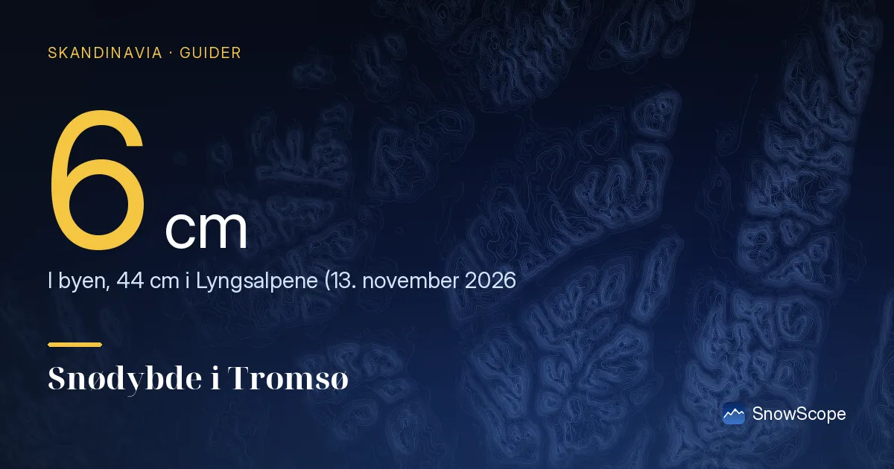

Snødybde i Tromsø: 6 cm i byen, 44 cm i Lyngsalpene (13. november 2026)
Tidlig-sesongs snø ligger ujevnt fordelt over Tromsø fylke denne fredagen. Stasjonen på øya i byen viser bare 6 cm, typisk for midten av november ved havnivå, men kjør innland og oppover til Lyngen-Alpene og du finner 44 cm—et brukbart snøgrunnlag som kom tidlig i uka.
Se snøprognosen for Tromsø direkte i SnowScope-appenSnødybde, puddervarsler og 3D-kartet, gratis.
Hvor snøen faktisk er
Kysten rundt Tromsø er tynn. Byens stasjon på 114 m målte 6 cm fredag morgen. Kjør 45 km sørøst til Lyngen Gjerdvassbu på 710 m og snødybden hopper til 44 cm. Den stasjonen har holdt et solid snøteppe hele uka: den hadde 38 cm på mandag, så bare 6 cm nysnø kom på fire dager, men det som falt har holdt seg kaldt og uforstyrret.
Mellom disse to ytterpunktene ligger et flekkevis område. Bardufoss, 68 km sør ved havnivå, har bare 3 cm. Fiskebygda Nordstraum i Kvænangen nordøst, 115 km unna på lavt område, har 8 cm. Kryss grensen til Finland: Kilpisjärvi, 100 km øst i høyere elevasjon, viser 13 cm.

Hvordan denne fredagen sammenlignes med andre novemberekspedisioner
Tromsøs snørekord nær havnivå spenner over 46 tidligere vintrer. Snø lå på bakken 13. november i 32 av dem. Middelsnødybden for denne datoen er 8 cm, med variasjonen fra bare bakke til omkring 17 cm i snørrike år. Dagens 6 cm passer nøyaktig inn i det mønsteret—ubemerkelses verdig for årstiden.
De siste fem årene forteller en løsere historie. To av dem, 2022-23 og 2025-26, hadde ingen snø ved denne datoen. År 2023-24 brakte 12 cm. I år kom snøen på skjemaet, men holdt seg beskjeden i byen. Innen 1. desember er typisk dybde her omkring 17 cm, innen midten av desember omkring 27 cm, og innen midten av januar omkring 50 cm.
Stabilitet og høyde betyr mer enn tid
Tidlig-sesongs snø ligger på bar bakke og binder ofte ikke godt. De 44 cm i Lyngen ligger på det som sannsynligvis er et tynt lag med gammel torv eller lav. Skisteder og turgåere som planlegger bratt terreng bør sjekke snøskredvarselet på Varsom før de drar: vinden kunne ha lasta vissa eksposisjonene, og bakken under er ikke ennå konsolidert.
Høydeforskjellen fra Tromsø by til Lyngen skisteder er omkring 600 m. Den vertikale forskyvningen forklarer det meste av forskjellen i snødekningen. Når du kjører innland fra havnivå mot fjellene, forvente at bakken endres fra våt til isete og snøen blir dypere. Kjørelys og vinterdekk er lurt på lørdag.
Helgeværet holder snøen
Lørdag blir tørt under høytrykk. Temperaturene varierer fra omkring -11 °C tidlig morgen til -4 °C på ettermiddagen, avhengig av hvor du er. Søndag bringer omkring 2 cm nysnø på tvers av regionen, deretter blir luften varmere nær 0 °C. Mandag holder seg nær null grader med lite mer nedbør.
Dette frys-og-legg-til-mønsteret vil bevare det tynne snøteppet i byen og legge til akkurat nok til det dype snøet i Lyngen for å holde det skibar. Helgen er klar og kald—gode forhold for alle som er villig til å gå oppover eller kjøre oppbakke for å finne det.
Tips til skiløpere
- I byen, 6 cm og mørke november-ettermiddager betyr at en hodelykta og skistøvler eller microspikes gjør en tur omkring Tromsø til noe trygt og behagelig.
- Veien sørøst mot Lyngen går fra våt asfalt til isete seksjoner når høyden øker. Vinterdekk og moderat fart lønn seg lørdag morgen.
- Før du skier bratte helninger i Lyngen, sjekk snøskredvarselet på Varsom. Tidlig-sesongs snø på bar bakke kan gli hvis vind eller sol har arbeidet på en hellning. De 44 cm er reelle, men grunnlaget er ungt.
- Hvis du planlegger å gå oppover i Lyngen-Alpene denne helgen, vil frosten lørdag og nysnøen søndag gjøre stigningsforholdene faste og trygge.
- I byen, søndagens mildere luft og 2 cm nysnø vil ikke erstatte de 6 cm—det vil ligge oppå. Snøteppet gjenstår tynt; regn eller tining neste uke kunne fjerne det.
Om tallene
Snødybdene for skistedene er det dypeste snødekket i de øvre bakkene på datoen som vises; de er anslag for et område, ikke en måling i ett punkt. Prognoser kan endre seg. Les alltid det offisielle snøskredvarselet før du kjører utenfor preparert løype.
Siter denne rapporten
For forskning, undervisning eller presse: tallene og diagrammene kan brukes fritt under CC BY 4.0 med denne kildehenvisningen.
SnowScope (2026), Snødybde i Tromsø: 6 cm i byen, 44 cm i Lyngsalpene (13. november 2026), https://snowscope.app/blog/nb/2026/11/tromso-snow-depth-13-november-2026.html, hentet 2026-11-13
SnowScope (Atlas Labs). (2026, November 13). Snødybde i Tromsø: 6 cm i byen, 44 cm i Lyngsalpene (13. november 2026). SnowScope snow reports. https://snowscope.app/blog/nb/2026/11/tromso-snow-depth-13-november-2026.html
BibTeX
@misc{snowscope2026tromsosnowdepth13novembe,
author = {{SnowScope (Atlas Labs)}},
title = {Snødybde i Tromsø: 6 cm i byen, 44 cm i Lyngsalpene (13. november 2026)},
year = {2026},
month = nov,
howpublished = {\url{https://snowscope.app/blog/nb/2026/11/tromso-snow-depth-13-november-2026.html}},
note = {Published 2026-11-14 13:29 UTC; accessed 2026-11-13}
}· CC BY 4.0 · Metoder, data og verktøy →
Følg Tromsø
Gratis: en melding når nysnø er på vei, og prognosen hver morgen.